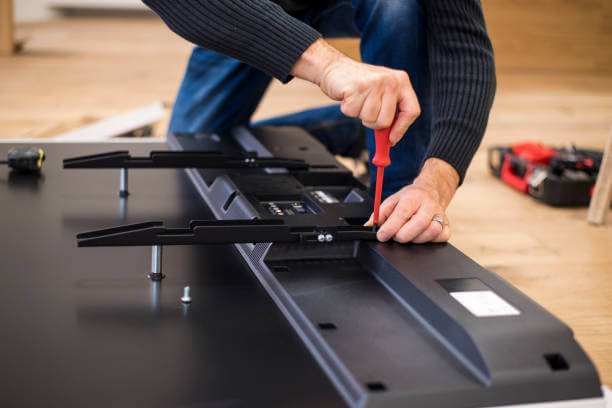

Looking for a reliable and professional TV repair service?
Look no further than our expert team of technicians. We specialize in providing high-quality, affordable repairs for all makes and models of TVs, LCD and LED. With years of experience in the industry, we have the knowledge and expertise to diagnose and repair a wide range of issues, from broken screens, blank screens, no indicator and more.
We use only the highest-quality parts and equipment to ensure that your TV is repaired to the highest standards of quality and reliability. And with our commitment to excellent customer service, you can trust us to provide a seamless and stress-free repair experience.
And not only TVs, but we also offer repairing service to the following:
- Uninterrupted Power Supplies(UPS)
- Inverter
- Microwaves
- DVD Player
- Amplifiers and more